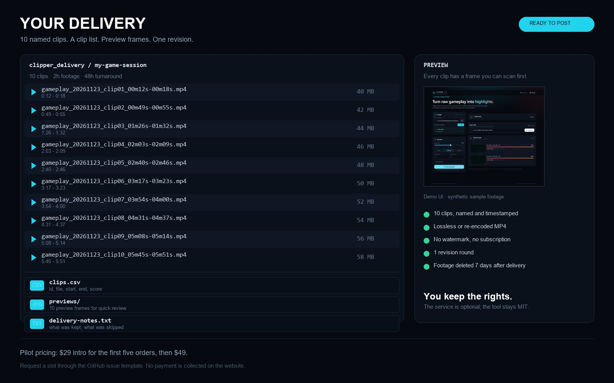

Send gameplay. Get clips worth posting.
A done-for-you highlight pack built on the free Clipper pipeline. Send up to 2 hours of footage you own; get 10 trimmed, named clips with timestamps, previews, and a clip list in 48 hours.
No payment collected on this page. Scope, rights, and delivery are confirmed before anything is charged.
10 clips, named
16:9, source resolution where possible, with timestamps in the filename and a clips.csv.
Local pipeline
Processed on one local machine, not uploaded to an AI SaaS. Deleted 7 days after delivery.
Human review
The detector proposes; I review the shortlist and export. One revision round on Warm-up.
Simple pricing.
First five orders are $29. No subscription, no watermark. The free Clipper tool remains MIT licensed.
- 10 highlight clips
- Up to 2 hours of footage
- 48-hour turnaround
- 1 revision round
- 16:9 lossless, no watermark
- 25 highlight clips
- Up to 6 hours of footage
- 72-hour turnaround
- 2 revision rounds
- Lossless + re-encoded MP4
- 60 highlight clips
- Up to 20 hours of footage
- 5-day turnaround
- 2 revision rounds
- Priority queue + presets
A clean delivery folder.
Not a zip of random timestamps. Every clip is named, every cut is listed, and every preview is there for a quick scan.

Three steps, no mystery.
Send scope + footage
Game, runtime, deadline, what counts as a highlight. Confirm you own the footage. Private intake after scope.
I detect + review
Audio spikes and motion propose windows. I review the list, export the clips, and write the delivery notes.
Download + revise
You get the folder, clip list, and previews. One revision round on Warm-up; two on larger packs.
The important details.
Does this include vertical clips or captions?
Not in the pilot. The packages are 16:9 only. Ask before ordering if vertical is a hard requirement.
Do I need to install anything?
No. You send footage through the private intake method and receive the finished clips. The free tool is separate.
How do you pick the highlights?
Audio spikes plus visual motion propose windows, then I review them. It is heuristic, not semantic: loud + fast-moving. If it misses a timestamp, tell me within the revision round.
Do you keep my footage?
No. It is processed on one local machine and deleted 7 days after delivery unless we agree otherwise in writing.
What if I don't have a folder link?
After scope is confirmed, I send a private intake method. Do not post private links or personal data in the public issue.
Can I pay on this page?
No. Request a slot first; payment is handled only after scope and terms are agreed.
Full terms: SERVICE.md. You must own or have permission to use the footage. The service is optional; the tool stays MIT licensed.
Request a pilot slot.
Open the request form, answer the scope questions, and wait for confirmation. No payment until the scope is agreed.
Open the clip request form